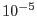
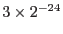

rgsfilter removes unwanted frames and events from the combined event list for RGS. The internal node-specific exposure maps are also constructed (or reconstructed) so that they comply with the filtering of the frames and events. This is important for tasks such as rgsspectrum and rgsrmfgen, which use these maps to perform exposure corrections. Lastly, a single exposure map for the entire focal plane is constructed by combining the node-specific maps. An event list may be filtered repeatedly by rgsfilter, and typically the user will start with an event list that has already been filtered for bad events and corrupted frames, and apply additional filtering on hand-selected time-intervals. rgsfilter is not a generalized selection engine: it filters on frame timestamp and certain event flags only. All other filtering, for which the exposure maps do not need to be rebuilt (or for which this is either not feasible or not well defined), is left to other tasks. Throughout this document a marks items that do not apply to High Time Resolution (HTR) mode data.
The filtering of frames is specified for each CCD separately through OGIP standard tables of Good Time Intervals (GTI). The time-filtering that has been applied to the event list is described by its STDGTI0n tables. Strictly speaking, these tables may be more prescriptive than descriptive on the input, but are always descriptive on the output. To further restrict the GTI, a list of auxiliary GTI tables may be specified (parameter auxgtitables) and are applied as a filter to each of the STDGTI0n tables. These tables are also filtered to remove any frames that lack attitude correction or lie partially outside the GTI. The output STDGTI0n tables, whether altered or not, are applied as a filter to the EVENTS, EXPOSU0n and REJPIXnn tables. The filtering of events is specified through event flags (parameter rejflags). The event-filtering that has been applied to the event list is described by the REJFLAGS attribute of the EVENTS table. Events with these flags are removed from the EVENTS table, but not from the REJPIXnn tables. When the exposure maps are constructed the REJFLAGS attribute determines which entries in the REJPIXnn tables are selected. Event-filtering is restricted to the enumerated subset of the EVENTS table FLAG bits that are recommended for rejecting events. Note that all uplinked bad pixels are always left unexposed in the exposure maps regardless of what flags are set in REJFLAGS.
An exposure map provides the effective amount of active, photon-collecting time as a function of discrete (binned) position on the surface of the chip. The map values are in units of seconds, and the coordinate system is aspect-corrected RGS angles (dispersion and cross-dispersion). After rgsfilter version 1.18, the units for the dispersion axis in the exposure maps coordinate can be in:
In principle one would not expect to find negative values in an exposure map, but because of certain algorithmic difficulties negative values do occur. The largest of these (in absolute value) are due to the nearly negligible curvature of the angular coordinate system, and only manifest along the top and bottom edges of the chip. This effect should not be larger than roughly  of the total exposure (characterized by the DATAMAX attribute). Much smaller, and more widespread, are the errors due to round-off: inevitably, spurious infinitesimal values, both positive and negative, are occasionally found in unexposed pixels. To suppress this disconcerting effect any pixel with absolute value less than  of the total exposure is reset to zero in the final map. Any negative values that remain most likely represent a systematic error.